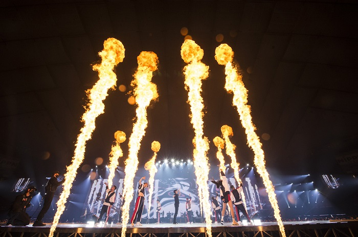

魅力「その2」

写真の4大ドームツアーは、Nissyの手によってプロデュースされている。曲順を決めるのもNissy、演出の方向性を決めるのもNissy、最終的なOKを出すのもNissyなのである。

スタッフとの関係やチームワークも良く、写真のような観客のペンライトを利用したサプライズをスタッフの手によって準備された。
《制作者：松木翔英》 《参考・引用ページ》↓https://meetia.net/music/nissy-5th-anniversary-live/2/ 《最終更新日：2020.1.24》